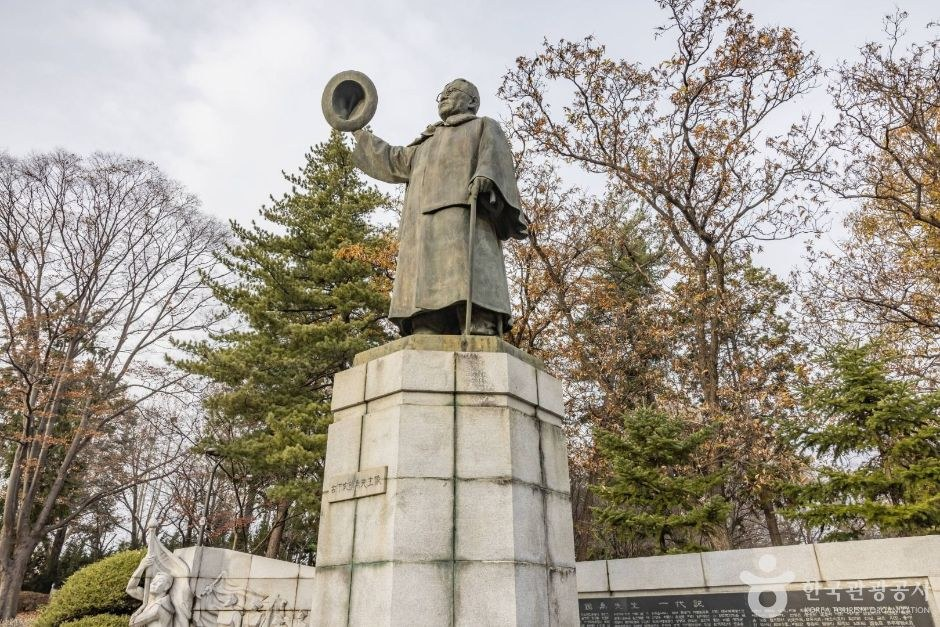
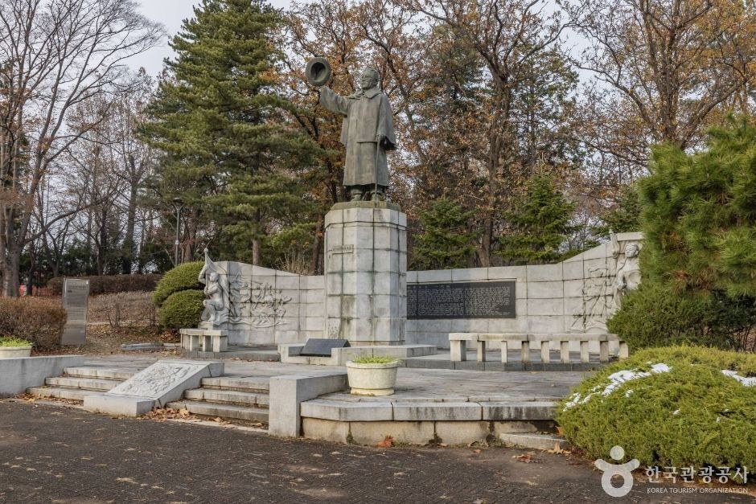
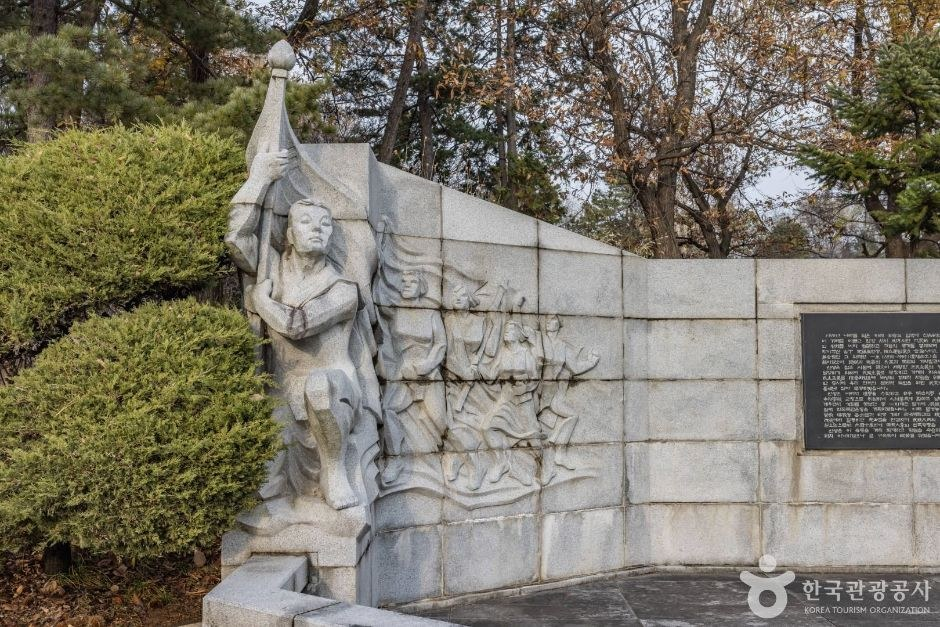
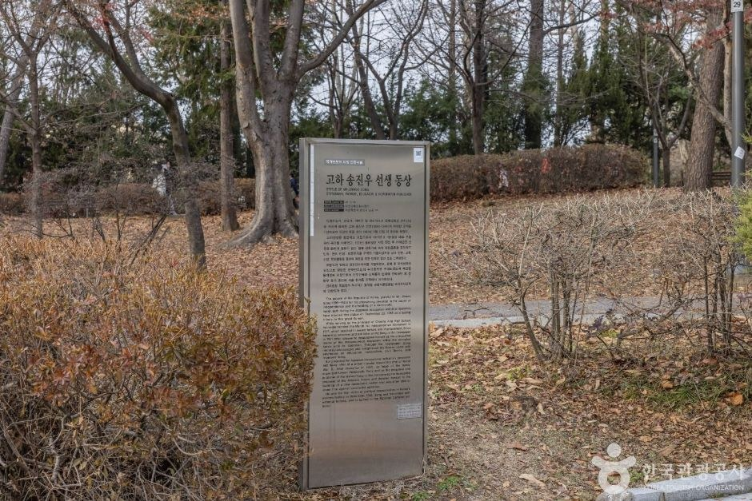

Seoul Song Jin-woo Statue Guide: Overview
This Seoul Song Jin-woo statue guide is for travellers who want a short, free piece of Korean independence history while visiting Seoul Children's Grand Park in Gwangjin-gu. The Goha Song Jin-woo Statue (고하송진우선생동상) stands inside the park between the main gate and the west gate, so you can reach it on an ordinary park walk.
It is a small memorial, not a big museum. But it tells a big story: a newspaper editor who used the press to keep Korean national spirit alive under Japanese colonial rule. If you are already near Konkuk University or Children's Grand Park Station, it is an easy, meaningful 15-minute stop.

What You Will See at the Memorial
According to KTO photos, a bronze figure of Song Jin-woo raising his hat stands on a tall stone pedestal, framed by a low granite wall with inscribed plaques. One end of the wall carries a carved relief of a figure holding a flag. A short flight of steps leads up to the statue from the path, and the memorial is surrounded by pine trees and trimmed shrubs, with an information board beside the walkway.
In mid-November the oaks and maples around it are turning gold and red, which makes it one of the more photogenic corners of the park in late autumn.


Who Was Song Jin-woo (Goha)?
Song Jin-woo (1890–1945), known by his pen name Goha (고하), was an independence activist, educator, journalist, politician and national leader. KTO's listing summarises his life in a few key moments:
- March 1st Movement (1919): helped lead the independence movement behind the scenes and was imprisoned for it.
- Dong-A Ilbo (from 1921): became president of the Dong-A Ilbo newspaper and, for about 20 years, used the paper to support the domestic independence movement during the darkest years of colonial rule.
- 1945: refused a Japanese offer to take over administrative power just before liberation.
- After liberation: founded the Korea Democratic Party and, as Dong-A Ilbo president, worked for democratic nation-building and against trusteeship — until he was shot at his home in Wonseo-dong, Seoul, by Han Hyun-woo and others.


Visitor Information
| Item | Details |
|---|---|
| Name | Goha Song Jin-woo Statue (고하송진우선생동상) |
| Address | 216 Neungdong-ro, Gwangjin-gu, Seoul (inside Seoul Children's Grand Park, between the main gate and the west gate) |
| Hours | 05:00–22:00 |
| Closed | Open every day of the year |
| Admission | Free |
| Parking | Available (park parking lots) |
| Stroller info | KTO lists no stroller rental at this spot |
| Inquiries | Seoul Children's Grand Park, 02-450-9311 |
Sources: Korea Tourism Organization (한국관광공사) destination listing. Photos © Korea Tourism Organization (KOGL Type 3, attribution). No AI-generated images. Hours can change — confirm before you go.
Getting There
Take Seoul Subway Line 7 to Children's Grand Park Station (어린이대공원역), which serves the park's main gate area, then walk towards the west gate — the statue sits between the two. Paste 고하송진우선생동상 into Naver Map or Kakao Map for exact walking directions; they work far better in Korea than Google Maps. If you drive, the park has parking lots.
Make a Half-Day of It in Children's Grand Park
Seoul Children's Grand Park opened on Children's Day, 5 May 1973, and covers about 536,000 m² of green space, according to KTO. The park itself is open 05:00–22:00; KTO lists the zoo at 10:00–17:00 and the amusement area at 10:00–18:30 on weekdays and 10:00–19:30 on weekends. After the statue, most visitors walk on to the music fountain, the zoo or the outdoor stage area — all free to enter except the rides.
Tips for Your Visit
- Go in daylight to read the plaques and get good photos of the bronze figure against the trees.
- Late autumn is beautiful — the surrounding trees turn colour in November.
- Bring a translation app: the plaques are in Korean; Papago's camera mode works well.
- Be respectful: it is a memorial, so avoid climbing the pedestal or wall.
- Pair it with Wonseo-dong: Song Jin-woo's life ended in Wonseo-dong near Changdeokgung — history fans can visit that neighbourhood on another day.
How It Compares with Other Seoul History Stops
| Song Jin-woo Statue (Gwangjin) | Independence Declaration Distribution Site (Jongno) | Gwansanggam Gwancheondae (Jongno) | |
|---|---|---|---|
| Type | Memorial statue in a city park | Historic site marker | Joseon observatory platform |
| Time needed | 15 minutes | 10–15 minutes | 15 minutes |
| Admission | Free | Free | Free |
| Best paired with | A Children's Grand Park walk | Insadong and Jongno | Bukchon and Changdeokgung |
Who It Suits
- Great for: Travellers interested in Korea's independence movement and the history of the Korean press.
- Great for: Families already visiting Children's Grand Park.
- Great for: Visitors staying near Konkuk University or Gunja who want a free half-day outing.
- Less ideal: Anyone looking for a full museum experience — try the Seodaemun Prison History Hall instead.
Plan Your Seoul Trip
Seoul Song Jin-woo Statue FAQ
Where is the Song Jin-woo statue?
Inside Seoul Children's Grand Park (서울어린이대공원), 216 Neungdong-ro, Gwangjin-gu, Seoul, between the main gate and the west gate. Search 고하송진우선생동상 in Naver Map or Kakao Map.
Is it free and when can I visit?
Yes, admission is free. Korea Tourism Organization (KTO) lists the hours as 05:00–22:00, open every day of the year, following the park's opening hours.
Who was Song Jin-woo?
Song Jin-woo (pen name Goha, 고하) was a Korean independence activist, educator, journalist and politician. KTO notes he helped lead the March 1st Movement behind the scenes and was imprisoned for it, ran the Dong-A Ilbo newspaper from 1921 for about 20 years, and after liberation founded the Korea Democratic Party before he was shot and killed at his home in Wonseo-dong, Seoul.
Is there parking?
Yes. KTO lists parking as available at Seoul Children's Grand Park. Public transport is easier: Children's Grand Park Station on Seoul Subway Line 7 serves the main gate area.
Who do I contact with questions?
Seoul Children's Grand Park information, 02-450-9311 (as listed by KTO).